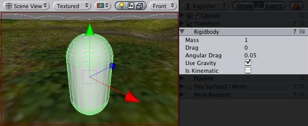
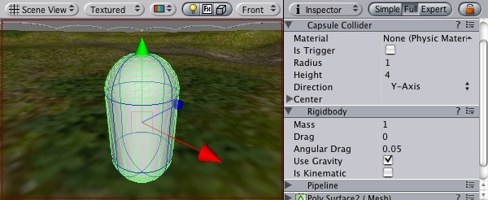

Previous
Previous
Rigidbodies are the gateway for applying physics to your objects. The Rigidbody can receive forces and torque to make your objects move in a realistic way. Any GameObject must contain a Rigidbody to be influenced by gravity, act under added forces via scripting, or interact with other objects through the Ageia physX physics engine.

A GameObject with a Rigidbody component attached
Properties
| Property: | Function: |
|---|---|
| The weight of the object in kilogram. For stable simulation it is recommended to make masses not more or less than 100 times that of other rigid bodies. | |
| How much air resistance affects the object when moving from forces. 0 means no air resistance, and infinity makes the object stop moving immediately. | |
| How much air resistance affects the object when rotating from torque. 0 means no air resistance, and infinity makes the object stop rotating immediately. | |
| If checked, the object is affected by gravity. | |
| If checked, the object will not be driven by the physics engine, but can only be manipulated by its Transform. This is useful for moving platforms or if you want to animate a Rigidbody that has a Hinge Joint attached. |
Details
Rigidbodies allow your GameObjects to act under control of the physics engine. This opens the gateway to realistic collisions, varied types of joints, and other very cool behaviors. Manipulating your objects by adding forces to a Rigidbody creates a very different feel and look than adjusting the Transform property directly. Generally, you shouldn't manipulate the Rigidbody and the Transform of the same object — just one or the other.
The biggest difference between manipulating the Transform or the Rigidbody is the use of forces. Rigidbodies can receive forces and torque, but Transforms cannot. Transforms can be translated and rotated, but this is not the same as using physics. You'll notice the distinct difference when adding you try it for yourself. Adding forces/torque to the Rigidbody will actually change the object's position and rotation of the Transform component. This is why you should only be using one or the other. Changing the Transform while using physics could cause problems with collisions and other calculations.
Rigidbodies must be explicitly added to your game object before they will be affected by the physics engine. You can add a Rigidbody to your selected object from Components->Dynamics->Rigidbody. Now your object is physics-ready; it will fall under gravity and can receive forces via scripting, but you may want to add a Collider or a Joint to get it to behave exactly how you want.
Parenting
When an object is under physics control, it moves semi-independently of the way its transform parents move. If you move any parents, they will pull the Rigidbody child along with them. However, the Rigidbodies will still fall down due to gravity and react to collision detection.
Scripting
To control your Rigidbodies, you will primarily use scripts to add forces or torque. You do this by calling AddForce and AddTorque on the object's Rigidbody. Remember that you shouldn't be directly altering the object's Transform when you are using physics.
Animation
For some situations, mainly creating ragdoll effects, it is neccessary to switch control of the object between animations and physics. For this purpose Rigidbodies can be marked Kinematic. While the Rigidbody is marked Kinematic, it will not be affected by collisions, forces, or any other part of the physics engine. This means that you will have to control the object by manipulating the Transform component directly. Kinematic Rigidbodies will affect other objects, but they themselves will not be affected by physics. For example, Joints which are attached to Kinematic objects will constrain any other Rigidbodies attached to them and Kinematic Rigidbodies will affect other Rigidbodies through collisions.
Colliders
Colliders are another kind of component that must be added alongside the Rigidbody in order to allow collisions to occur. If two Rigidbodies bump into each other, the physics engine will not calculate a collision unless both objects also have a Collider attached. Collider-less Rigidbodies will simply pass through each other during physics simulation.

A Rigidbody with a Collider component attached
Add a collider with the Component -> Dynamics menu. View the Component page of any individual Collider for more specific information:
- Box Collider - primitive shape of a cube
- Sphere Collider - primitive shape of a sphere
- Capsule Collider - primitive shape of a capsule
- Mesh Collider - creates a collider from the object's mesh, cannot collide with another Mesh Collider
- Wheel Collider - specifically for creating cars or other moving vehicles
Compound colliders
Compound Colliders are combinations of primitive Colliders, all together acting as a single Collider. They come in handy when you have a complex mesh to use in collisions, but cannot use a Mesh Collider. To create a Compound Collider, create child objects of your colliding object, then add a primitive Collider to each child object. This allows you to position, rotate, and scale each Collider easily and independently of each other.
A GameObject with a Rigidbody and multiple colliders attached
In the above picture, the terrain has a Mesh Collider attached. Mesh Colliders work the best for terrain or environments made from irregular shapes. The Rigidbody has 3 child Colliders attached: capsule, cube and sphere. When Play mode begins, the Rigidbody falls due to gravity, and the 3 child Colliders fall with it. The 3 Collision primitives collide with the Mesh Collider, and the Rigidbody eventually balances and comes to rest on the 3 Colliders.
Keep in mind, Mesh Colliders can't collide with each other, so the typical solution is to use primitive Colliders for any objects that move, and Mesh Colliders for static background objects.
Use the right size
The size value of the your object's mesh is much more important than the mass of the Rigidbody. If you find that your Rigidbody is not behaving exactly how you expect; it moves slowly, 'floats', or doesn't collide correctly; consider adjusting the scale of your mesh and/or the Rigidbody's Transform. Unity's default unit scale is 1 unit = 1 meter, so the scale of your imported mesh is maintained, and applied to physics calculations. For example, a crumbling skyscraper is going to fall apart very differently than a tower made of toy blocks, so objects of different sizes should be modeled to accurate scale.
If you are modelling a human make sure he is around 2 meters big in Unity. To check if your object has the right size compare it to the default cube. You can create a cube using GameObject->Create Other->Cube. The cube will be exactly 1 meter large. So your human should be twice as tall.
If you aren't able to adjust the mesh itself, you can change the global scale of each particular mesh by control-clicking on your imported mesh and selecting 'Import Settings' from the context menu. Here, you can change the scale and re-import your mesh.
If your game requires that your GameObject needs to be instantiated at different scales, it is perfectly okay to directly adjust the values of your Transform's scale. The down-side is that the physics simulation must do more work at the time the object is instantiated, and could cause a performance drop in your game. This isn't a terrible loss, but it is not as efficient as finalizing your scale with the other two options.
Hints
- The relative masses of two objects determines how they react when they collide.
- Making one object have higher mass than another does not make it fall faster in free fall. Use drag for that.
- A low drag value makes an object seem heavy. A high one makes it seem light. Typical values for drag are between .001 (solid block of metal) and 10 (feather)
- If you are directly manipulating the Transform component of your object but still want physics, attach a Rigidbody and make it Kinematic.